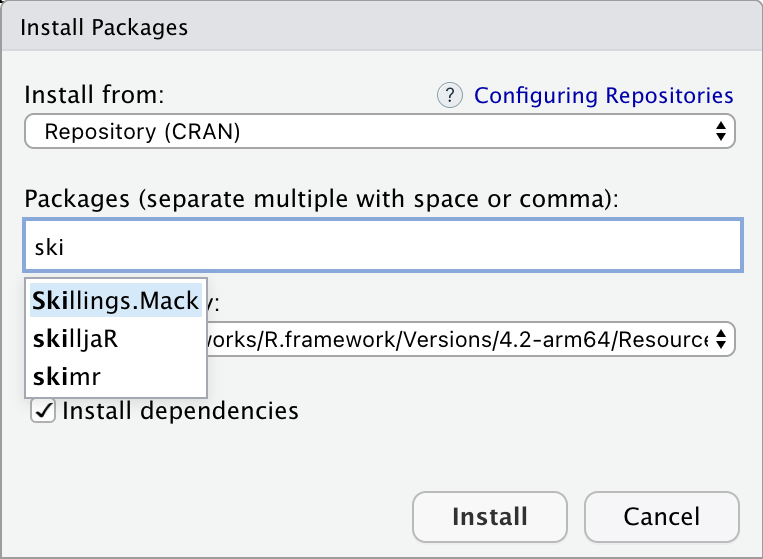
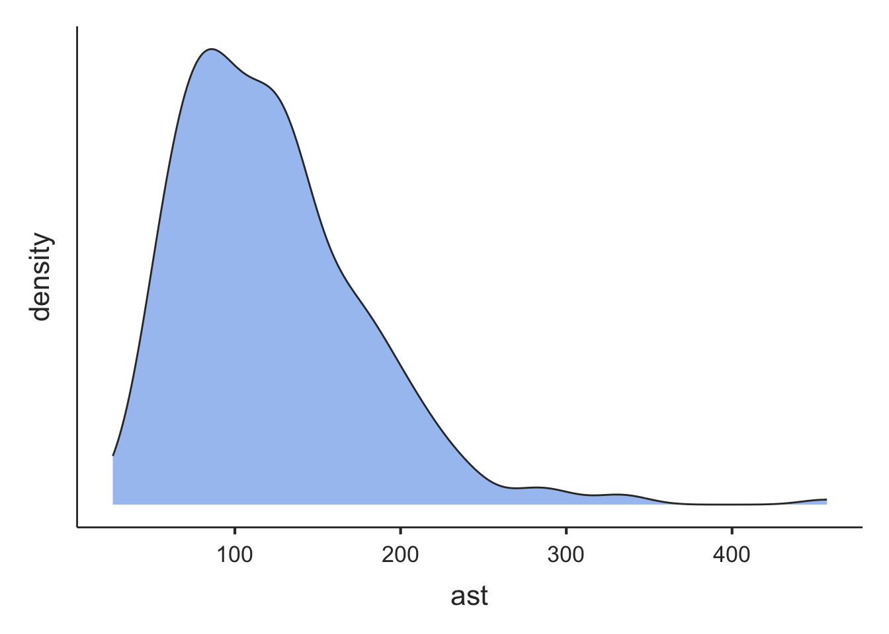
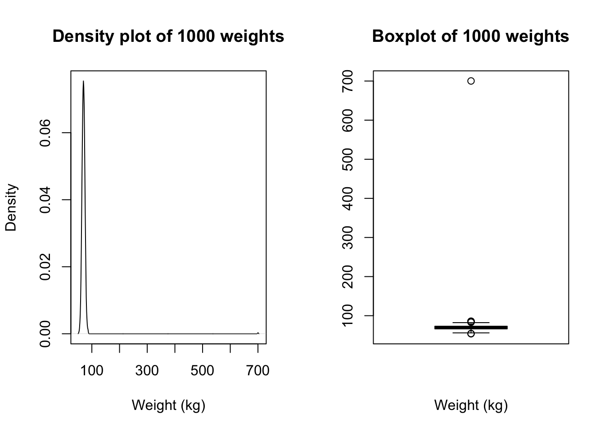

Learning objectives
By the end of this module, you will be able to:
- Understand the difference between descriptive and inferential statistics
- Distinguish between different types of variables
- Present and report continuous data numerically and graphically
- Compute summary statistics to describe the centre and spread of data
Optional readings
Kirkwood and Sterne (2001); Chapters 2, 3 and 4. [UNSW Library Link]
Bland (2015); Chapter 4. [UNSW Library Link]
1.1 An introduction to statistics
The dictionary of statistics (Upton and Cook, 2008) defines statistics simply as: “The science of collecting, displaying, and analysing data.”
Statistics is a branch of mathematics, and there are two main divisions within the field of statistics: mathematical statistics and applied statistics. Mathematical statistics deals with development of new methods of statistical inference and requires detailed knowledge of abstract mathematics for its implementation. Applied statistics applies the methods of mathematical statistics to specific subject areas, such as business, psychology, medicine and sociology.
Biostatistics can be considered as the “application of statistical techniques to the medical and health fields”. However, biostatistics sometimes overlaps with mathematical statistics. For instance, given a certain biostatistical problem, if the standard methods do not apply then existing methods must be modified to develop a new method.
Scope of Biostatistics
Research is essential in the practice of health care. Biostatistical knowledge helps health professionals in deciding whether to prescribe a new drug for the treatment of a disease or to advise a patient to give up drinking alcohol. To practice evidence-based healthcare, health professionals must keep abreast of the latest research, which requires understanding how the studies were designed, how data were collected and analysed, and how the results were interpreted. In clinical medicine, biostatistical methods are used to determine the accuracy of a measurement, the efficacy of a drug in treating a disease, in comparing different measurement techniques, assessing diagnostic tests, determining normal values, estimating prognosis and monitoring patients. Public health professionals are concerned about the administration of medical services or ensuring that an intervention program reduces exposure to certain risk factors for disease such as life-style factors (e.g. smoking, obesity) or environmental contaminants. Knowledge of biostatistics helps determine them make decisions by understanding, from research findings, whether the prevalence of a disease is increasing or whether there is a causal association between an environmental factor and a disease.
The value of biostatistics is to transform (sometimes vast amounts of) data into meaningful information, that can be used to solve problems, and then be translated into practice (i.e. to inform public health policy and decision making). When undertaking research having a biostatistician as part of a multidisciplinary team from the outset, together with scientists, clinicians, epidemiologists, healthcare specialists is vital, to ensure the validity of the research being undertaken and that information is interpreted appropriately.
1.2 What are data?
According to the Australian Bureau of Statistics, “data are measurements or observations that are collected as a source of information”.1 Note that technically, the word data is a plural noun. This may sound a little odd, but it means that we say “data are …” when discussing a set of measurements.
Other definitions that we use in this course are:
- observation, (or record, or unit record): one individual in the population being studied
- variable: a characteristic of an individual being measured. For example, height, weight, eye colour, income, country of birth are all types of variables.
- dataset: the complete collection of all observations
Types of variables
We can categorise variables into two main types: numeric or categorical.
Numerical variables (also called quantitative variables) comprise data that must be represented by a number, which can be either measured or counted.
Continuous variables can take any value within a defined range.
For example, age, height, weight or blood pressure, are continuous variables because we can make any divisions we want on them, and they can be measured as small as the instrument allows. As an illustration, if two people have the same blood pressure measured to the nearest millimetre of mercury, we may get a difference between them if the blood pressure is measured to the nearest tenth of millimetre. If they are still the same (to the nearest tenth of a millimetre), we can measure them with even finer gradations until we can see a difference.
Discrete variables can only take one of a distinct set of values (usually whole numbers). For discrete variables, observations are based on a quantity where both ordering and magnitude are important, such that numbers represent actual measurable quantities rather than mere labels.
For example, the number of cancer cases in a specified area emerging over a certain period, the number of motorbike accidents in Sydney, the number of times a woman has given birth, the number of beds in a hospital are all discrete variables. Notice that a natural ordering exists among the data points, that is, a hospital with 100 beds has more beds than a hospital with 75 beds. Moreover, a difference between 40 and 50 beds is the same as the difference between 80 and 90 beds.
Categorical variables comprise data that describe a ‘quality’ or ‘characteristic’. Categorical variables, sometimes called qualitative variables, do not have measurable numeric values. Categorical variables can be nominal or ordinal.
A nominal variable consists of unordered categories. For example, gender, race, ethnic group, religion, eye colour etc. Both the order and magnitude of a nominal variable are unimportant.
If a nominal variable takes on one of two distinct categories, such as black or white then it is called a binary or dichotomous variable. Other examples would be smoker or non-smoker; exposed to arsenic or not exposed.
A nominal variable can also have more than two categories, such as blood group, with categories of: Group A, Group B, Group AB and Group O.
Ordinal variables consist of ordered categories where differences between categories are important, such as socioeconomic status (low, medium, high) or student evaluation rating could be classified according to their level of satisfaction: (highly satisfied, satisfied and unsatisfied). Here a natural order exists among the categories.
Note that categorical variables are often stored in data sets using numbers to represent categories. However, this is for convenience only, and these variable must not be analysed as if they were numeric variables.
1.3 Descriptive and inferential statistics
When analysing a set of data, it is important to consider the aims of the analysis and whether these are descriptive or inferential. Essentially, descriptive statistics summarise data from a single sample or population, and present a “snap-shot” of those data. Inferential statistics use sample data to make statements about larger populations.
Descriptive statistics
Descriptive statistics provide a ‘picture’ of the characteristics of a population, such as the average age, or the proportion of people born in Australia. Two common examples of descriptive statistics are reports summarising a nation’s birth statistics, and death statistics.
Births
The Australian Institute of Health and Welfare produces comprehensive reports on the characteristics of Australia’s mothers and babies using the most recent year of data from the National Perinatal Data Collection. The National Perinatal Data Collection comprises all registered births in Australia.
The most recent report, published in 2024, summarises Australian births from 2022. (Australian Institute of Health and Welfare (2024)).
One headline from the report is that “More First Nations mothers are accessing antenatal care in the first trimester (up from 51% in 2013 to 71% in 2022)”. The report presents further descriptive statistics, such as the average maternal age (31.2 years) and the proportion of women giving birth by caesarean (39%).
Deaths
In another example, consider characteristics of all deaths in Australia in 2023 (Australian Bureau of Statistics (Thu, 10/10/2024 - 11:30)).
“COVID-19 was the ninth leading cause of death in 2023, after ranking third in 2022.”
The report presents the leading causes of death in 2023:
“The leading cause of death was ischaemic heart disease, accounting for 9.2% of deaths. The gap between ischaemic heart disease and dementia (the second leading cause of death) has continued to narrow over time, with only 237 deaths separating the top two leading causes in 2023.”
The top five causes of death are also presented as a graph, enabling a simple comparison of the changes in rates of death between 2014 and 2023.
Inferential statistics
Inferential statistics use data collected from a sample to make conclusions (inferences) about the whole population from which the sample was drawn. For example, the Australian Institute of Health and Welfare’s Australia’s health reports (eg Australian Institute of Health and Welfare (2025)) use a representative sample to make estimates of the health of the whole of Australia. We will revisit inferential statistics in later modules.
1.4 Summarising continuous data
In the first two Modules, we will focus on ways to summarise and present data. We will see that the choice of presentation will depend on the type of variable being summarised. In this Module, we will focus on continuous variables, and will focus on categorical data in Module 2.
Summarising a single continuous variable numerically
When summarising continuous data numerically, there are two things we want to know:
- What is the average value? And,
- How variable (or spread out) are the data?
We will use a sample of 35 ages (in whole years) to illustrate how to calculate the average value and measures of variability:
59 41 44 43 31 47 53 59 35 60 54 61 67 52 43 46 39 69 50 64 57 39 54 50 51 31 48 49 70 44 60 51 37 53 34
Measures of central tendency
Mean
The most commonly used measure of the central tendency of the data is the mean, calculated as:
\[\bar{x} = \frac{\sum x}{n}\]
From the age example: \(\bar{x}\) = 1745/35 = 49.9. Thus, the mean age of this sample is 49.9 years.
Median
Other measures of central tendency include the median and mode. The median is the middle value of the data, the value at which half of the measurements lie above it and half of the measurements lie below it.
To estimate the median, the data are ordered from the lowest to highest values, and the middle value is used. If the middle value is between two data points (if there are an even number of observations), the median is an average of the two values.
Using our example, we could rank the ages from smallest to largest, and locate the middle value (which has been bolded):
31 31 34 35 37 39 39 41 43 43 44 44 46 47 48 49 50 50 51 51 52 53 53 54 54 57 59 59 60 60 61 64 67 69 70
Here, the median age is 50 years.
Note that, in practice, the median is usually calculated by software automatically, and there is no need to rank our data.
Describing the spread of the data
In addition to measuring the centre of the data, we also need an estimate of the variability, or spread, of the data points.
Range
The absolute measure of the spread of the data is the range, that is the difference between the highest and lowest values in the dataset.
Range = highest data value – lowest data value
Using the age example, Range = 70 - 31 = 39 years.
The range is most usefully reported as the actual lowest and highest values e.g. Range: 31 to 70 years.
The range is not always ideal as it only describes the extreme values, without considering how the bulk of the data is distributed between them.
Variance and standard deviation
More useful statistics to describe the spread of the data around a mean value are the variance and standard deviation. These measures of variability depend on the difference between individual observations and the mean value (deviations). If all values are equal to the mean there would be no variability at all, all deviations would be zero; conversely large deviations indicate greater variability.
One way of combining deviations in a single measure is to first square the deviations and then average the squares. Squaring is done because we are equally interested in negative deviations and positive deviations; if we averaged without squaring, negative and positive deviations would ‘cancel out’. This measure is called the variance of the set of observations. It is ‘the average squared deviation from the mean’. Because the variance is in ‘square’ units and not in the units of the measurement, a second measure is derived by taking the square root of the variance. This is the standard deviation (SD), and is the most commonly used measure of variability in practice, as it is a more intuitive interpretation since it is in the same units as the units of measurement.
The formula for the variance of a sample (\(s^2\)) is:
\[ s^2 = \frac{\sum(x - \bar{x})^2}{n-1} \]
Note that the deviations are first squared before they are summed to remove the negative values; once summed they are divided by the sample size minus 1.
The sample standard deviation is the square root of the of the sample variance:
\[s = \sqrt{s^2}\] For the age example, we would calculate the sample variance using statistical software. The sample standard deviation is estimated as: \(s = 10.47 \text{ years}\).
Characteristics of the standard deviation:
- It is affected by every measurement
- It is in the same units as the measurements
- It can be converted to measures of precision (standard error and 95% confidence intervals) (Module 3)
Interquartile range
The inter-quartile range (IQR) describes the range of measurements in the central 50% of values lie. This is estimated by calculating the values that cut the data at the bottom 25% and top 25%. The IQR is the preferred measure of spread when the median has been used to describe central tendency.
In the age example, the IQR is estimated as 43 to 58 years.
Population values: mean, variance and standard deviation
The examples above show how the sample mean, range, variance and standard deviation are calculated from the sample of ages from 35 people. If we had information on the age of the entire population that the sample was drawn from, we could calculate all the summary statistics described above (for the sample) for the population.
The equation for calculating the population mean is the same as that of sample mean, though now we denote the population mean as \(\mu\):
\[ \mu = \frac{\sum{x}}{N} \]
Where \(\sum{x}\) represents the sum of the values in the population, and \(N\) represents the total number of measurements in the population.
To calculate the population variance (\(\sigma^2\)) and standard deviation(\(\sigma\)), we use a slightly modified version of the equation for \(s^2\):
\[ \sigma^2 = \frac{\sum(x - \mu)^2}{N} \]
with a population standard deviation of: \(\sigma = \sqrt{\sigma^2}\).
In practice, we rarely have the information for the entire population to be able to calculate the population mean and standard deviation. Theoretically, however, these statistics are important for two main purposes:
- the characteristics of the normal distribution (the most important probability distribution discussed in later modules) are defined by the population mean and standard deviation;
- while calculating sample sizes (discussed in later modules) we need information about the population standard deviation, which is usually obtained from the existing literature.
Summarising a single continuous variable graphically
As well as calculating measures of central tendency and spread to describe the characteristics of the data, a graphical plot can be helpful to better understand the characteristics and distribution of the measurements obtained. Histograms, density plots and box plots are excellent ways to display continuous data graphically.
Frequency histograms
A frequency histogram is a plot of the number of observations that fall within defined ranges of non-overlapping intervals (called bins). Examples of frequency histograms are given in Figure 1.2.
Some features of a frequency histogram:
- The area under each rectangle is proportional to the frequency
- The rectangles are drawn without gaps between them (that is, the rectangles touch)
- The data are ‘binned’ into discrete intervals (usually of equal width)
A slight variation on the frequency histogram is the density histogram, which plots the density on the y-axis. The density is a technical term, which is similar to the relative frequency, but is scaled so that the sum of the area of the bars is equal to 1.
Both the frequency and density histograms are useful for understanding how the data is distributed across the range of values. Taller bars indicate regions where the data is more densely concentrated, while shorter bars represent areas with fewer data points.
Density plot
A density plot can be thought of as a smoothed version of a density histogram. Like histograms, density plots show areas where there are a lot of observations and areas where there are relatively few observations. Figure 1.3 illustrates example density plots for the same data as plotted in Figure 1.2.

Like histograms, density plots allow you to see the overall shape of a distribution. They are most useful when there are only a small number of observations being plotted. When plotting small datasets, the shape of a histogram can depend on how the bins are defined. This is less of an issue if a density plot is used.
Boxplots
Another way to inspect the distribution of data is by using a box plot. In a box plot:
- the line across the box shows the median value
- the limits of the box show the 25-75% range (i.e. the inter-quartile range (IQR) where the middle 50% of the data lie)
- the bars (or whiskers) indicate the most extreme values (highest and lowest) that fall within 1.5 times the interquartile range from each end of the box
- the upper whisker is the highest value falling within 75th percentile plus 1.5 × IQR
- the lower whisker is the lowest value falling within 25th percentile minus 1.5 × IQR
- any values in the dataset lying outside the whiskers are plotted individually.
Figure 1.4 presents two example boxplots for age and serum bilirubin.

The shape of a distribution
Histograms and density plots allow us to consider the shape of a distribution, and in particular, whether a distribution is symmetric or skewed.
In a histogram, if the rectangles fall in a roughly symmetric shape around a single midpoint, we say that the distribution is symmetric. Similarly, if a density plot looks roughly symmetric around a single point, the distribution is symmetric.
If the histogram or density plot has a longer tail to the right, then the data are said to be positively skewed (or skewed to the right); if the histogram or density plot has an extended tail to the left, then the data are negatively skewed (or skewed to the left).
The skewness of a distribution is defined by the location of the longer tail in a histogram or density plot, not the location of the peak of the data.
From Figure 1.2 and Figure 1.3, we can see that the distribution for age is roughly symmetric, while the distribution for serum bilirubin is highly positively skewed (or skewed to the right).
While it is technically possible to determine the shape of a distribution using a boxplot, a histogram or density plot gives a more complete illustration of a distribution and would be the preferred method of assessing shape.
Which measure of central tendency to use
We introduced the mean and median in Section 1.4.1.1 as measures of central tendency. We need to assess the shape of a distribution to answer which is the more appropriate measure to use.
If a distribution is symmetric, the mean and median will be approximately equal. However, the mean is the preferred measure of central tendency as it makes use of every data point, and has more useful mathematical properties.
The mean is not a good measure of central tendency for skewed distributions, as the calculation will be influenced by the observations in the tail of the distribution. The median is the preferred statistic for describing central tendency in a skewed distribution.
If the data exhibits a symmetric distribution, we use the standard deviation as the measure of spread. Otherwise, the interquartile range is preferred.
1.5 Exploratory data analysis for continuous data
Before conducting any formal analysis, it is good practice to undertake exploratory data analysis. This analysis step gives you a high-level overview of your data: what do your data look like, what are the main features, what shape is the distribution, and are there any unusual values.
Exploring continuous data is best done by examining plots: specifically density plots and boxplots. Density plots are useful in determining the shape of a distribution, to help you decide what summary measures to use, and what type of analysis to conduct. Boxplots can be useful in identifying any unusual points - often called outliers.Outliers can be problematic and the decision to include them or omit them from further analyses can be difficult.
After detecting any outliers or extreme values, do not automatically exclude them from the analysis. First, it is important to check the original data collection form or questionnaire to rule out the possibility of a data entry error. If the outlier is not a data entry error, it is then important to decide whether the observation is biologically possible. This step will usually need to be answered by a topic expert. If the outlier is biologically possible, it must be included in the analysis. Only if the outlier is biologically impossible should it be set to missing.
An introduction to jamovi
Learning outcomes
By the end of these notes, you will be able to:
- navigate the jamovi interface
- input and import data into jamovi
- use jamovi menus to summarise data
- perform basic data transformations
- assign variable and value labels
- understand the difference between saving data and saving jamovi output
- copy jamovi output to a standard word processing package
1.6 Introduction
From the jamovi website:
jamovi is a new “3rd generation” statistical spreadsheet. Designed from the ground up to be easy to use, jamovi is a compelling alternative to costly statistical products such as SPSS and SAS.
jamovi is built on top of the R statistical language, giving you access to the best the statistics community has to offer. Would you like the R code for your analyses? jamovi can provide that too.
jamovi will always be free and open - that’s one of our core values - because jamovi is made by the scientific community, for the scientific community.
The notes provided in this course will cover the basics of using jamovi: there is much more to jamovi than we will cover in this course.
1.7 Part 1: An introduction to jamovi
In this very brief section, we will introduce jamovi by calculating the average of six ages. Open the jamovi package in the usual way (note that while jamovi is available for Windows, MacOS and linux, most of the screenshots in these notes will be based on the macOS version.)
1.8 Installing jamovi
jamovi can be downloaded for no cost at https://www.jamovi.org/download.html for Windows, macOS and linux. At the time of writing, Version 2.6.26 solid is the appropriate version to use. Download and install jamovi in the usual way.
1.9 A simple jamovi analysis
When you first open jamovi, it will look something like the following.
On the left-hand side of the window is the spreadsheet view, and the right is where results of statistical analyses will appear. The spreadsheet is where data can be entered or changed.
Your screen should look like this:
There are two things to note here:
- Data in jamovi are entered down a column: columns represent variables, and rows represent observations. So our six observations of age are entered in one column.
- jamovi has given the name of
Ato our column of ages.
Let’s rename our variable from A to Age (years). There are a number of ways of doing this: here we will click the Data tab which allows us to change aspects of our dataset, and then click Setup. By default, the first column is selected - you can choose any column simply by clicking it.
In this window, you can change many variable properties, such as variable names and variable types. To change the variable name, click the name of the variable, currently A, at the top of the window. Replace A with Age (years):
Note that jamovi has assumed these data are Nominal data; this can be changed to Continuous by choosing the appropriate item in the Measure type drop-down menu:
Once you have finished naming all your variables, you can click the Up arrow to close the Setup tab to view the spreadsheet again.
jamovi is very flexible with its naming convention, and allows variable names that many other statistical packages would not allow. Often, the only way to get publication quality graphs or tables is to name your variables as completely as you can. However, I would recommend the following conventions when choosing variable names in jamovi:
- try to keep your variable names relatively short;
- variable names should start with a letter;
- variable names are case-sensitive (so age, Age and AGE could represent three different variables)
Now that we have entered our six ages, let’s calculate the mean age. Choose Analyses > Exploration > Descriptives. The Descriptives dialog box will appear. Move the variable Age into the Variables box by clicking Age (years) and then clicking the right-arrow icon. The window should appear as:
You can see the results of the analysis in the right-hand pane.
The jamovi environment
Now that we have seen a simple example of how to use jamovi, let’s describe the jamovi environment. There are two main views in jamovi: the Spreadsheet view, available by clicking the Data tab, and the Analysis view, available by clicking the Analyses tab. We will tend to use these two tabs through the course.
The unique thing about jamovi is that all analyses are updated whenever the data are changed in the spreadsheet. While this can be convient, care must be taken not to make any unintended changes to your data while in the spreadsheet view.
jamovi also has a way of opening and saving data, using the three lines in the upper-left corner: . This collection of commands lets you open data, save data and export data and output.
Tip
The Special Import command is hardly ever used. You should use Open to open all types of data in jamovi.
1.10 Part 2: Obtaining summary statistics for continuous data
In this exercise (spanning Modules 1 and 2), we will analyse data to complete a descriptive table from a research study. The data come from a study in primary biliary cirrhosis, a condition of the liver, from Therneau and Grambsch (2010), Modeling Survival Data: Extending the Cox Model. By the end of this exercise, we will have completed the following table.
Characteristic |
| Summary |
|---|---|---|
Age (years) | Mean (SD) or Median [IQR] | |
Sex | Male | n (%) |
Female | n (%) | |
AST* (U/ml) | Mean (SD) or Median [IQR] | |
Serum bilirubin | Mean (SD) or Median [IQR] | |
Stage | I | n (%) |
II | n (%) | |
III | n (%) | |
IIIV | n (%) | |
Vital status at study end | Alive: no transplant | n (%) |
Alive: transplant | n (%) | |
Deceased | n (%) | |
* asparate aminotransferase | ||
Opening a data file
Typing data directly into jamovi is not common; we usually open data that have been saved as a file. jamovi can open many types of files, including text (txt), comma separated (csv), Microsoft Excel (xlsx), R (rds), Stata (dta) and more. Here, we will open a dataset that has been stored as an R data file (which has the .rds suffix).
Assigning meaningful variable names
As we saw earlier, jamovi has can allow quite useful variable names, which will appear when creating output. For example, the variable entered as bili could be named Serum bilirubin (mg/dl).
Summarising continuous variables
As we saw in Part 1, continuous variables can be summarised using Analyses > Exploration. There are three continuous variables that we would like to summarise: age, AST and serum bilirubin. Each of these can be listed in the Exploration dialog box, as shown below. The summaries are calculated automatically:
By default, the exploration command presents the number of observations, the number of missing observations, the mean, median, standard deviation, minimum and maximum. We may be interested in obtaining the interquartile range as well, so we select the Statistics arrow, and choose Percentiles:
For each of our three continuous variables, we need to decide whether to present the mean and standard deviation, or the median and interquartile range. This decision can be made after examining a density plot (and perhaps a boxplot) for each variable.
Producing a density plot
To produce a density plot, click the arrow next to Plots and choose Density. Plots will be produced for each variable listed in the Variables box. The density plots will be produced one after another, but they have been presented horizontally here:

Producing a boxplot
Producing boxplots is done by ticking the Box plot box. By default, jamovi labels each of the points that it considers to be an outlier with its row number; this can be turned off if desired.
Saving your work from jamovi
Now that you have made some changes to the pbc data and conducted some analyses, it is good practice to save your work. jamovi uses its own file format to save both data and output, using files with .omv suffix. All changes to your data will be saved, as well as all existing output. However, work saved by jamovi will only be able to be opened by jamovi - you will not easily be able to share your data or your output with colleagues who do not have jamovi. To save a jamovi session, choose Save in the three-lines tab.
If you want to share work with colleagues who do not have jamovi, you can use Export to save your data in another file format (recognising that variable and value labels will not be exported), or save your output as a pdf or html file.
Copying output from jamovi
An easy way to share output between your colleagues is to copy the output into a word processor package (e.g. Microsoft Word). To copy output from jamovi, you can right-click2 the output with your mouse, and choose Export. This will copy the output as plain text for pasting into a Word document. If you select a single table for copying, you can also Copy table or Copy table as HTML. Whichever way you copy output into Word, you will need to make sure your output conforms with all style guides required for your final publication.
1.11 Setting a value to missing
As we saw in Section 1.5, it is important to explore our data to identify any unusual observations. If an error is found, the best method for correcting the error is to go back to the original data e.g. the hard copy questionnaire, to obtain the original value, entering the correct value into jamovi. If the original data is not available or the original data is also incorrect, the erroneous value is often excluded from the dataset.
Consider a sample dataset: mod01_weight_1000.rds, which contains the weights of 1000 people. A density plot and a boxplot should be examined before we start analysing these data:
There is a clear outlying point shown in the boxplot. Although not obvious, the same point is shown in the density plot as a small blip around 700kg. Obviously this point is unusual, and we should investigate. You will need to decide if any usual values are a data entry error or are biologically plausible. If an extreme value or “outlier”, is biologically plausible, it should be included in all analyses.
Notice the boxed number in the boxplot: this is the record number in jamovi’s spreadsheet. Click Data to view the spreadsheet, and scroll to record number 58:
We see that there is a very high value of 700.2kg. A value as high as 700kg is likely to be a data entry error (e.g. error in entering an extra zero) and is not a plausible weight value. Here, you should check your original data.
If you do not have access to the original data, it would be safest to set this value as missing. You do change this in jamovi by clicking the datapoint and pressing Delete or Backspace. This has set this weight to missing.
Note: if an extreme value lies within the range of biological possibility it should not be set to missing.
The same process could be used to replace the incorrect value with the correct value. For example, if you do source the original medical records, you might find that the original weight was recorded in medical records as 70.2kg. We could use the same process to replace 700.2 by 70.2 by entering the correct value in the cell.
Once you have checked your data for errors, you are ready to start analysing your data.
Important
Whenever you start changing data in jamovi, you should always keep an original, unedited copy of your data. You can do this using Save As to save your edited work, leaving the original data unchanged.
An introduction to R and RStudio
Learning outcomes
By the end of this Module, you will be able to:
- understand the difference between R and RStudio
- navigate the RStudio interface
- input and import data into R
- use R to summarise data
- perform basic data transformations
- understand the difference between saving R data and saving R output
- copy R output to a standard word processing package
1.12 Part 1: An introduction to R
“R is a language and environment for statistical computing and graphics.” Link. It is an open-source programming language, used mainly for statistics (including biostatistics) and data science.
The aim of these notes is to introduce the R language within the RStudio environment, and to introduce the commands and procedures that are directly relevant to this course. There is so much more to R than we can cover in these notes. Relevant information will be provided throughout the course, and we will provide further references that you can explore if you are interested.
R vs RStudio
At its heart, R is a programming language. When you install R on your computer, you are installing the language and its resources, as well as a very basic interface for using R. You can write and run R code using the basic R app, but it’s not recommended.
RStudio is an “Integrated Development Environment” that runs R while also providing useful tools to help you write code and analyse data. You can think of R as an engine which does the work, and RStudio as a car that uses the engine, but also provides useful tools like GPS navigation and reversing cameras that help you drive.
Note: even though we recommend that you use RStudio, you still need install R. RStudio will not run without R installed.
In summary, we recommend you use RStudio to write R code.
Installing R and RStudio
To install R on your computer
Download the R installer from:
- for Windows: https://cran.r-project.org/bin/windows/base/
- for MacOS: https://cran.r-project.org/bin/macosx/
Install R by running the installer and following the installation instructions. The default settings are fine.
- Note for macOS: if you are running macOS 10.8 or later, you may need to install an additional application called XQuartz, which is available at https://www.xquartz.org/. Download the latest installer (XQuartz-2.8.5.dmg as of May 2024), and install it in the usual way.
Open the R program. You should see a screen similar to below:
Near the bottom of the R screen, you will find the “>” symbol which represents the command line. If you type 1 + 2 into the command line and then hit enter you should get:
[1] 3
This is R performing your calculation, with the [1] indicating that the solution to 1 + 2 is a single number (the number 3).
At this point, close R - we will not interact with R like this in the future. You can close R by typing quit() at the command prompt, followed by the return key, or in the usual way of closing an application in your operating system. There is no need to save anything here if prompted.
To install RStudio on your computer
- Make sure you have already installed R, and verified that it is working.
- Download the RStudio desktop installer at: https://posit.co/download/rstudio-desktop/. The website should detect your operating system and link to the appropriate installer for your computer.
- Install RStudio by running the installer and following the installation instructions. The default settings are fine.
- Open RStudio, which will appear similar to the screenshot below:
Locate the command line symbol “>” at the bottom of the left-hand panel. Type 1 + 2 into the command line and hit enter, and you will see:
[1] 3
This confirms that RStudio is running correctly, and can use the R language to correctly calculate the sum between 1 and 2!
RStudio currently comprises three window panes, and we will discuss these later.
Recommended setup
I will provide a recommended setup for R and RStudio in this section. You are free to use alternative workflows and setup, but this setup works well in practice.
RStudio preferences
By default, RStudio will retain data, scripts and other objects when you quit your RStudio session. Relying on this can cause headaches, so I recommend that you set up RStudio so that it does not preserve your workspace between sessions. Open the RStudio options:
Mac: Edit > Settings
Windows: Tools > Global Options
and deselect “Restore .RData into workplace at startup”, and choose: “Save workspace to .RData on exit: Never”.

Set up a project
A project in RStudio is a folder that RStudio recognises as a place to store R scripts, data files, figures that are common to an analysis project. Setting up a folder allows much more simple navigation and specification of data files and output. More detail can be found in Chapter 8 of the excellent text: R for Data Science. Using projects is not necessary, but I recommend working with projects from day one.
We will create a project called PHCM9795 to store all the data you will use and scripts that you will write in this course. First, think about where you want to store your project folder: this could be somewhere in your Documents folder.
Step 1: Choose File > New Project… in RStudio to open the Create Project dialog box:
Step 2: Click the first option to create a project in a New directory
Step 3: Click the first option: New Project. Give the project a name, by typing PHCM9795 in the “Directory name”, and choose where you want to store the project by clicking the Browse button.

Step 4: Click Create to create your project.
You will now have a new folder in your directory, which contains only one file: PHCM9795.Rproj, and the two right-hand panes of RStudio will appear as below:

The top-right menu bar is showing that you are working within the PHCM9795 project, and the bottom-right window is showing the contents of that window: the single PHCM9795.Rproj file. We will add some more files to this project later.
A simple R analysis
In this very brief section, we will introduce R by calculating the average of six ages.
To begin, open a new R Script by choosing File > New file > R Script . A script (or a program) is a collection of commands that are sequentially processed by R. You can also type Ctrl+Shift+N in Windows, or Command+Shift+N in MacOS to open a new script in RStudio, or click the New File button at the top of the RStudio window.
You should now see four window panes, as below. In the top-left window, type the following (replacing my name with yours, and including today’s date):
# Author: Timothy Dobbins
# Date: 5 April 2024
# Purpose: My first R script
age <- c(20, 25, 23, 29, 21, 27)
summary(age)Note: R is case-sensitive, so you should enter the text exactly as written in these notes.
Your screen should look something like:
To run your script, choose Code > Run Region > Run All. You will see your code appear in the bottom-left window, with the following output:
> # Author: Timothy Dobbins
> # Date: 5 April 2024
> # Purpose: My first R script
>
> age <- c(20, 25, 23, 29, 21, 27)
> summary(age)
Min. 1st Qu. Median Mean 3rd Qu. Max.
20.00 21.50 24.00 24.17 26.50 29.00 We will explain the key parts of this script later, but for now, you have entered six ages and calculated the mean age (along with five other summary statistics).
The RStudio environment
Now that we have seen a simple example of how to use R within RStudio, let’s describe the RStudio environment. Let’s assume that you have just run your first R script, and you have four windows as below:
The top-left window is call the Source window, and is where you write and edit your R scripts. Scripts can be saved by clicking File > Save As or by clicking on the symbol of a floppy disk at the top of the script. The file will have an extension of .R, for example script.R. Remember to give your script a meaningful title and remember to periodically save as you go.
In RStudio, the name of the script will be black when it has been saved, and will change to red if you have any unsaved changes.
The Console window, at the bottom left, contains the command line which is indicated with the symbol >. You can type commands here, but anything executed directly from the console is not saved and therefore is lost when the session ends (when you exit RStudio). You should always run your commands from a script file which you can save and use again later. When you run commands from a script, the output and any notes/errors are shown in the console. The Terminal and Jobs tabs will not be used in this course.
The Environment window at the top-right shows a list of objects that have been created during your session. When you close your RStudio session these objects will disappear. We will not use the History or Connections tabs in this course.
The bottom right corner contains some useful tabs, in particular the Help tab. When you are troubleshooting errors or learning how to use a function, the Help tab should be the first place you visit. Here you can search the help documents for all the packages you have installed. Whenever you create plots in R, these will be shown in the Plots tab. The Packages tab contains a list of installed packages and indicates which ones are currently in use (we will learn about packages later). Packages which are loaded, i.e. in use, are indicated with a tick. Some packages are in use by default when you begin a new session. You can access information about a package by clicking on its name. The Files tab provides a shortcut to access your files. The Viewer tab will not be used in this course.
Some R basics
While we use R as a statistics package, R is a programming language. In order to use R effectively, we need to define some basics.
Scripts
While R can be run completely from the command line, issuing commands one-by-one, it is most commonly run using scripts. A script is simply a list of commands that are processed in order. The simple analysis we conducted earlier is a very simple script. Some things to know about R scripts:
anything appearing after a # is a comment, and is ignored by R. The first three lines of our script are there for ourselves (either as writers of code, or readers of code). I include comments at the beginning of each of my scripts to describe:
who wrote the script (useful if someone else uses your script and wants to ask questions about it);
when the script was written;
what the script does. This last point may seem odd, but it’s useful to describe what this script does, and why it might differ to other scripts being used in the analysis. This is particularly useful if your scripts become long and complex.
R is case-sensitive. So
age,AGEandAgecould refer to three separate variables (please don’t do this!)use blank lines and comments to separate sections of your script
Objects
If you do some reading about R, you may learn that R is an “object-oriented programming language”. When we enter or import data into R, we are asking R to create objects from our data. These objects can be manipulated and transformed by functions, to obtain useful insights from our data.
Objects in R are created using the assignment operator. The most common form of the assignment operator looks like an arrow: <- and is typed as the < and - symbols. The simplest way of reading <- is as the words “is defined as”. Note that it possible to use -> and even = as assignment operators, but their use is less frequent.
Let’s see an example:
x <- 42This command creates a new object called x, which is defined as the number 42 (or in words, “x is defined as 42”). Running this command gives no output in the console, but the new object appears in the top-right Environment panel. We can view the object in the console by typing its name:
# Print the object x
x[1] 42Now we see the contents of x in the console.
This example is rather trivial, and we rarely assign objects of just one value. In fact, we created an object earlier, called age, which comprised six values.
Data structures
There are two main structures we will use to work with data in this course: vectors and data frames. A vector is a combination of data values, all of the same type. For example, our six ages that we entered earlier is a vector. You could think of a vector as a column of data (even though R prints vectors as rows!) And technically, even an object with only one value is a vector, a vector of size 1.
The easiest way of creating a vector in R is by using the c() function, where c stands for ‘combine’. In our previous Simple Analysis in R (Section 1.12.4), we wrote the command:
age <- c(20, 25, 23, 29, 21, 27)This command created a new object called age, and combined the six values of age into one vector.
Just as having a vector of size 1 is unusual, having just one column of data to analyse is also pretty unusual. The other structure we will describe here is a data frame which is essentially a collection of vectors, each of the same size. You could think of a data frame as being like a spreadsheet, with columns representing variables, and rows representing observations.
There are other structures in R, such as matrices and lists, which we won’t discuss in this course. And you may come across the term tibble, which is a type of data frame.
Functions
If objects are the nouns of R, functions are the verbs. Essentially, functions transform objects. Functions can transform your data into summary statistics, graphical summaries or analysis results. For example, we used the summary() function to display summary statistics for our six ages.
R functions are specified by their arguments (or inputs). The arguments that can be supplied for each function can be inspected by examining the help notes for that function. To obtain help for a function, we can submit help(summary) (or equivalently ?summary) in the console, or we can use the Help tab in the bottom-right window of RStudio. For example, the first part of the help notes for summary appear as:

The help notes in R can be quite cryptic, but the Usage section details what inputs should be specified for the function to run. Here, summary requires an object to be specified. In our case, we specified age, which is our object defined as the vector of six ages.
Most help pages also include some examples of how you might use the function. These can be found at the very bottom of the help page.
The summary() function is quite simple, in that it only requires one input, the object to be summarised. More complex functions might require a number of inputs. For example, the help notes for the descriptives() function in the jmv package show a large number of inputs can be specified. Instructions for installing the jmv package will be provided below, this help-screen is included for illustration only.

There are two things to note here. First, notice that the first two inputs are listed with no = symbol, but all other inputs are listed with = symbols (with values provided after the = symbol). This means that everything apart from data and vars have default values. We are free to not specify values for these inputs if we are happy with the defaults provided. For example, by default the variance is not calculated (as variance = FALSE). To obtain the variance as well as the standard deviation, we can change this default to variance = TRUE:
# Only the standard deviation is provided as the measure of variability
descriptives(data=pbc, vars=age)
# Additionally request the variance to be calculated
descriptives(data=pbc, vars=age, variance=TRUE)Second, for functions with multiple inputs, we can specify the input name and its value, or we can ignore the input name and specify just the input values in the order listed in the Usage section. So the following are equivalent:
# We can specify that the dataset to be summarised is pbc,
# and the variable to summarise is age:
descriptives(data=pbc, vars=age)
# We can omit the input name, as long as we keep the inputs in the correct order -
# that is, dataset first, variable second:
descriptives(pbc, age)
# We can change the order of the inputs, as long as we specify the input name:
descriptives(vars=age, data=pbc)In this course, we will usually provide all the input names, even when they are not required. As you become more familiar with R, you will start to use the shortcut method.
The curse of inconsistency
As R is an open-source project, many people have contributed to its development. This has led to a frustrating part of R: some functions require a single object to be specified, but some require you to specify a data frame and select variables for analysis. Let’s see an example.
The help for summary() specifies the usage as: summary(object, ...). This means we need to specify a single object to be summarised. An object could be a single column of data (i.e. a vector), or it could be a data frame. If we have a data frame called pbc which contains many variables, the command summary(pbc) would summarise every variable in the data frame.
What if we only wanted to summarise the age of the participants in the data frame? To select a single variable from a data frame, we can use the following syntax: dataframe$variable. So to summarise just age from this data frame, we would use: summary(pbc$age).
Compare this with the descriptives() function in the jmv package. We saw earlier that the two required inputs for descriptives() are data (the data frame to be analysed) and vars (the variables to be analysed). So to summarise age from the pbc data frame, we would specify descriptives(data=pbc, vars=age).
This inconsistency will seem maddening at first, and will continue to be maddening! Reading the usage section of the help pages is a useful way to determine whether you should specify an object (like pbc$age) or a data frame and a list of variables.
Packages
A package is a collection of functions, documentation (and sometimes datasets) that extend the capabilities of R. Packages have been written by R users to be freely distributed and used by others. R packages can be obtained from many sources, but the most common source is CRAN: the Comprehensive R Archive Network.
A useful way of thinking about R is that R is like a smartphone, with packages being like apps which are downloaded from CRAN (similar to an app-store). When you first install R, it comes with a basic set of packages (apps) installed. You can do a lot of things with these basic packages, but sometimes you might want to do things differently, or you may want to perform some analyses that can’t be done using the default packages. In these cases, you can install a package.
Like installing an app on a smartphone, you only need to install a package once. But each time you want to use the package, you need to load the package into R.
How to install a package
There are a couple of ways to install a package. You can use the install.packages() function if you know the exact name of the package. Let’s use an example of installing the skimr package, which gives a very nice, high-level overview of any data frame. We can install skimr by typing the following into the console:
install.packages("skimr")Note the use of the quotation marks.
Alternatively, RStudio offers a graphical way of installing packages that can be accessed via Tools > Install Packages, or via the Install button at the top of the Packages tab in the bottom-right window. You can begin typing the name of the package in the dialog box that appears, and RStudio will use predictive text to offer possible packages:

While writing code is usually the recommended way to use R, installing packages is an exception. Using Tools > Install Packages is perfectly fine, because you only need to install a package once.
How to load a package
When you begin a new session in RStudio, i.e. when you open RStudio, only certain core packages are automatically loaded. You can use the library() function to load a package that has previously been installed. For example, now that we have installed skimr, we need to load it before we can use it:
library(skimr)Note that quotation marks are not required for the library() function (although they can be included if you really like quotation marks!).
Installing vs loading packages
Package installation:
- use the
install.packages()function (note the ‘s’) or Tools > Install packages - the package name must be surrounded by quotation marks
- only needs to be done once
Package loading
- use the
library()function - the package name does not need to be surrounded by quotation marks
- must be done for each R session
What is this thing called the tidyverse?
If you have done much reading about R, you may have come across the tidyverse:
“The tidyverse is an opinionated collection of R packages designed for data science. All packages share an underlying design philosophy, grammar, and data structures.” https://www.tidyverse.org/
Packages in the tidyverse have been designed with a goal to make using R more consistent by defining a “grammar” to manipulate data, examine data and draw conclusions from data. While the tidyverse is a common and powerful set of packages, we will not be teaching the tidyverse in this course for two main reasons:
- The data we provide have been saved in a relatively tidy way, and do not need much manipulation for analyses to be conducted. The cognitive load in learning the tidyverse in this course is greater than the benefit that could be gained.
- There are many resources (online, in print etc) that are based on
base R, and do not use the tidyverse. It would be difficult to understand these resources if we taught only tidyverse techniques. In particular, thedataframe$variablesyntax is an important concept that should be understood before moving into the tidyverse.
In saying all of this, I think the tidyverse is an excellent set of packages, which I frequently use. At the completion of this course, you will be well equipped to teach yourself tidyverse using many excellent resources such as: Tidyverse Skills for Data Science and R for Data Science.
1.13 Part 2: Obtaining summary statistics for continuous data
In this exercise (spanning Modules 1 and 2), we will analyse data to complete a descriptive table from a research study. The data come from a study in primary biliary cirrhosis, a condition of the liver, from Modeling Survival Data: Extending the Cox Model Therneau and Grambsch (2010). By the end of this exercise, we will have completed the following table.
Characteristic |
| Summary |
|---|---|---|
Age (years) | Mean (SD) or Median [IQR] | |
Sex | Male | n (%) |
Female | n (%) | |
AST* (U/ml) | Mean (SD) or Median [IQR] | |
Serum bilirubin | Mean (SD) or Median [IQR] | |
Stage | I | n (%) |
II | n (%) | |
III | n (%) | |
IIIV | n (%) | |
Vital status at study end | Alive: no transplant | n (%) |
Alive: transplant | n (%) | |
Deceased | n (%) | |
* asparate aminotransferase | ||
This table is available in Table1.docx, saved on Moodle.
Set up your data
We created a project in the previous step. We will now create a folder to store all the data for this course. Storing the data within the project makes life much easier!
Create a new folder by clicking the New Folder icon in the Files tab at the bottom-right:

Call the new folder data.
Click on this folder to open it, and then create two new folders: activities and examples.
Download the “Data sets: for learning activities” from Moodle, and use Windows Explorer or MacOS Finder to save these data sets in activities. Save the “Data sets: example data from course notes” into the examples folder.
Your activities folder should look like:

Click the two dots next to the up-arrow at the top of the folder contents to move back up the folder structure. Note that you need to click the dots, and not the up-facing green arrow!
Reading a data file
Typing data directly into R is not common; we usually read data that have been previously saved. In this example, we will read an .rds file using the readRDS() function, which has only one input: the location of the file.
The summary() and skim() functions are useful to give a quick overview of a dataset: how many variables are included, how variables are coded, which variables contain missing data and a crude histogram showing the distribution of numeric variables.
Summarising continuous variables
One of the most flexible functions for summarising continuous variables is the descriptives() function from the jmv package. The function is specified as descriptives(data=, vars=) where:
dataspecifies the dataframe to be analysedvarsspecifies the variable(s) of interest, with multiple variables combined using thec()function
We can summarise the three continuous variables in the pbc data: age, AST and serum bilirubin, as shown below.
library(jmv)
descriptives(data=pbc, vars=c(age, ast, bili))
DESCRIPTIVES
Descriptives
───────────────────────────────────────────────────────────
age ast bili
───────────────────────────────────────────────────────────
N 418 312 418
Missing 0 106 0
Mean 50.74155 122.5563 3.220813
Median 51.00068 114.7000 1.400000
Standard deviation 10.44721 56.69952 4.407506
Minimum 26.27789 26.35000 0.3000000
Maximum 78.43943 457.2500 28.00000
─────────────────────────────────────────────────────────── By default, the descriptives function presents the mean, median, standard deviation, minimum and maximum. We can request additional statistics, such as the quartiles (which are called the percentiles, or pc, in the descriptives function):
descriptives(data=pbc, vars=c(age, ast, bili), pc=TRUE)
DESCRIPTIVES
Descriptives
───────────────────────────────────────────────────────────
age ast bili
───────────────────────────────────────────────────────────
N 418 312 418
Missing 0 106 0
Mean 50.74155 122.5563 3.220813
Median 51.00068 114.7000 1.400000
Standard deviation 10.44721 56.69952 4.407506
Minimum 26.27789 26.35000 0.3000000
Maximum 78.43943 457.2500 28.00000
25th percentile 42.83231 80.60000 0.8000000
50th percentile 51.00068 114.7000 1.400000
75th percentile 58.24093 151.9000 3.400000
─────────────────────────────────────────────────────────── Producing a density plot
We can add dens=TRUE to the descriptives function to produce a density plot for each listed variable:
descriptives(data=pbc, vars=c(age, ast, bili), pc=TRUE, dens=TRUE)
DESCRIPTIVES
Descriptives
───────────────────────────────────────────────────────────
age ast bili
───────────────────────────────────────────────────────────
N 418 312 418
Missing 0 106 0
Mean 50.74155 122.5563 3.220813
Median 51.00068 114.7000 1.400000
Standard deviation 10.44721 56.69952 4.407506
Minimum 26.27789 26.35000 0.3000000
Maximum 78.43943 457.2500 28.00000
25th percentile 42.83231 80.60000 0.8000000
50th percentile 51.00068 114.7000 1.400000
75th percentile 58.24093 151.9000 3.400000
─────────────────────────────────────────────────────────── 
Note that the density plots are plotted separately in the Plot window. They can be viewed using the arrows at the top of the Plot window:
A more flexible way of constructing a density plot is by using the plot() function within R, using the syntax: plot(density(dataframe$variable)), which plots the variable from the dataframe. For example, the default density plot for the age column of the pbc data:
plot(density(pbc$age))This plot can be improved by using xlab=" " and main=" " to assign labels for the x-axis and overall title respectively:
plot(density(pbc$age),
xlab="Age in years",
main="Density plot of participant age from pbc study data")
Note
The density() function requires the analysis variable to contain no missing values, and will give an error if there are any missing values. We can use the option na.rm=TRUE to request that the density function ignore any missing values. For example:
plot(density(pbc$ast, na.rm=TRUE),
xlab="AST (U/mL)",
main="Density plot of aspartate aminotransferase from pbc study data")Producing a boxplot
Like the density plot, boxplots can be requested in the descriptives function by using box=TRUE.
The boxplot function is an alternative, more flexible function, again specifying the dataframe to use and the variable to be plotted as dataframe$variable. Labels can be applied in the same way as the histogram:
boxplot(pbc$age, xlab="Age (years)",
main="Boxplot of participant age from pbc study data")
Saving data in R
There are many ways to save data from R, depending on the type of file you want to save. The recommendation for this course is to save your data using the .rds format, using the saveRDS() function, which takes two inputs: saveRDS(object, file). Here, object is the R object to be saved (usually a data frame), and file is the location for the file to be saved (file name and path, including the .rds suffix).
It is not necessary to save our PBC data, as we have made only minor changes to the data that can be replicated by rerunning our script. If you had made major changes and wanted to save your data, you could use:
saveRDS(pbc, file="pbc_revised.rds")
Copying output from R
It is important to note that saving your data or your script in R will not save your output. The easiest way to retain the output of your analyses is to copy the output from the Console into a word processor package (e.g. Microsoft Word) before closing R.
Unfortunately, by default, R is not ideal for creating publication quality tables. There are many packages that will help in this process, such as R Markdown, huxtable, gt and gtsummary, but their use is beyond the scope of this course. R Markdown for Scientists provides an excellent introduction to R Markdown.
1.14 Setting a value to missing
As we saw in Section 1.5, it is important to explore our data to identify any unusual observations. If an error is found, the best method for correcting the error is to go back to the original data e.g. the hard copy questionnaire, to obtain the original value, entering the correct value into R. If the original data is not available or the original data is also incorrect, the erroneous value is often excluded from the dataset.
Consider a sample dataset: mod01_weight_1000.rds, which contains the weights of 1000 people. A density plot and a boxplot should be examined before we start analysing these data:

There is a clear outlying point shown in the boxplot. Although not obvious, the same point is shown in the density plot as a small blip around 700kg. Obviously this point is unusual, and we should investigate.
We can view any outlying observations in the dataset using the subset function. You will need to decide if these values are a data entry error or are biologically plausible. If an extreme value or “outlier”, is biologically plausible, it should be included in all analyses.
For example, to list any observations from the sample dataset with a weight larger than 200:
subset(sample, weight>200)| id | weight |
|---|---|
| 58 | 700 |
We see that there is a very high value of 700.2kg. A value as high as 700kg is likely to be a data entry error (e.g. error in entering an extra zero) and is not a plausible weight value. Here, you should check your original data.
If you do not have access to the original data, it would be safest to set this value as missing. You do change this in R by using an ifelse statement to recode the incorrect weight of 700.2kg into a missing value. A missing value in R is represented by NA.
The form of the ifelse statement is as follows: ifelse(test, value_if_true, value_if_false)
We will write code to:
- create a new column (called
weight_clean) in thesampledataframe (i.e.sample$weight_clean) - test whether
weightis equal to 700.2- if this is true, we will assign
weight_cleanto be NA - otherwise
weight_cleanwill equal the value ofweight
- if this is true, we will assign
Putting it all together:
sample$weight_clean = ifelse(sample$weight==700.2, NA, sample$weight)Note: if an extreme value lies within the range of biological possibility it should not be set to missing.
The same syntax could be used to replace the incorrect value with the correct value. For example, if you do source the original medical records, you might find that the original weight was recorded in medical records as 70.2kg. We could use the same syntax to replace 700.2 by 70.2: sample$weight_clean = ifelse(sample$weight==700.2, NA, sample$weight)
Once you have checked your data for errors, you are ready to start analysing your data.
What on earth: == ?
In R, the test of equality is denoted by two equal signs: ==. So we would use == to test whether an observation is equal to a certain value. Let’s see an example:
# Test whether 6 is equal to 6
6 == 6[1] TRUE# Test whether 6 is equal to 42
6 == 42[1] FALSEYou can read the == as “is equal to”. So the code sample$weight == 700.2 is read as: “is the value of weight from the data frame sample equal to 700.2?”. In our ifelse statement above, if this condition is true, we replace weight by 70.2; if it is false, we leave weight as is.
Activities
Activity 1.1
25 participants were enrolled in a 3-week weight loss program. The following data present the weight loss (in grams) of the participants.
255 | 198 | 283 | 312 | 283 |
57 | 85 | 312 | 142 | 113 |
227 | 283 | 255 | 340 | 142 |
113 | 312 | 227 | 85 | 170 |
255 | 198 | 113 | 227 | 255 |
- These data have been saved as
Activity_1.1.rds. Read the data into your software package. - What type of data are these?
- Construct an appropriate graph to display the distribution of participants’ weight loss. Provide appropriate labels for the axes and give the graph an appropriate title.
Activity 1.2
Which of the following statements are true? The more dispersed, or spread out, a set of observations are:
- The smaller the mean value
- The larger the standard deviation
- The smaller the variance
Activity 1.3
Estimate the mean, median, standard deviation, range and interquartile range for the data Activity_1.3.rds, available on Moodle.
Activity 1.4
Data of diastolic blood pressure (BP) of a sample of study participants are provided in the datasets Activity_1.4.rds. Compute the mean, median, range and SD of diastolic BP.
Activity 1.5
The ages of 100 study participants have been saved as Activity_1.5.rds. Estimate the:
- mean and median;
- standard deviation and interquartile range;
- range.
Plot the data using a histogram and boxpolot. Is there anything unusual about the ages? What do you think is a possible explanation for this?
A clean version of the data have been saved as Activity_1.5_clean.rds. Recalculate the summary statistics and recreate the plots using the clean data.
Based on this exercise, what is your advice on coding unusual or missing values in data?
https://www.abs.gov.au/statistics/understanding-statistics/statistical-terms-and-concepts/data↩︎
Windows
- Click the right mouse button to open a context menu
- Shows options relevant to what you clicked on (copy, export, add note)
Mac
- Two-button mouse: Press right button
- One-button mouse/trackpad: Hold Control (Ctrl) while clicking
- Functions the same as Windows - shows context-specific options